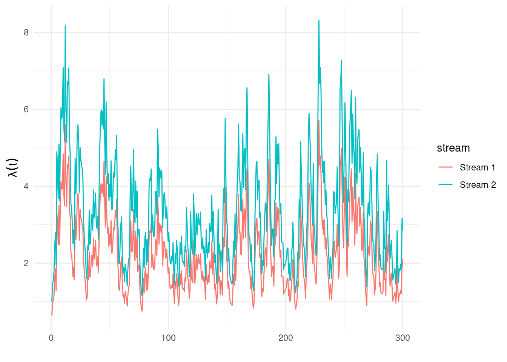
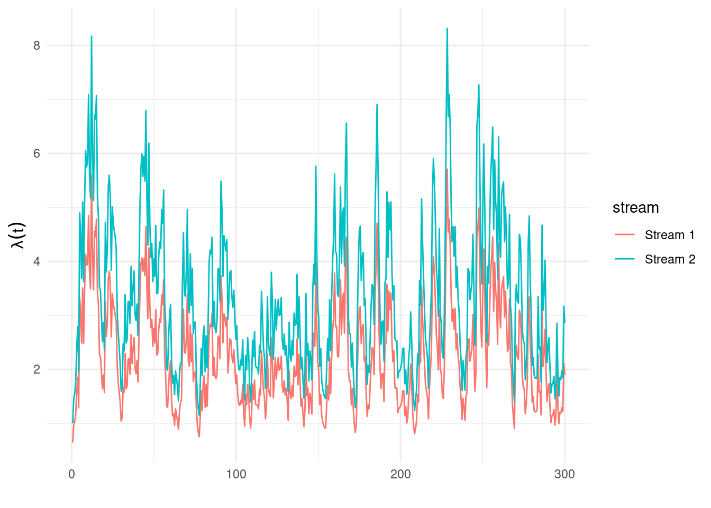

ℹ Loading stelfi
A multivariate Hawkes process allows for between- and within-stream self-excitement. In stelfi the conditional intensity for the \(j^{th}\) (\(j = 1, ..., N\)) stream is given by
\[\lambda(t)^{j*} = \mu_j + \Sigma_{k = 1}^N\Sigma_{i:\tau_i<t} \alpha_{jk} e^{(-\beta_j * (t-\tau_i))},\] where \(j, k \in (1, ..., N)\). Here, \(\alpha_{jk}\) is the excitement caused by the \(k^{th}\) stream on the \(j^{th}\). Therefore, \(\boldsymbol{\alpha}\) is an \(N \times N\) matrix where the diagonals represent the within-stream excitement and the off-diagonals represent the excitement between streams.
ℹ Loading stelfi